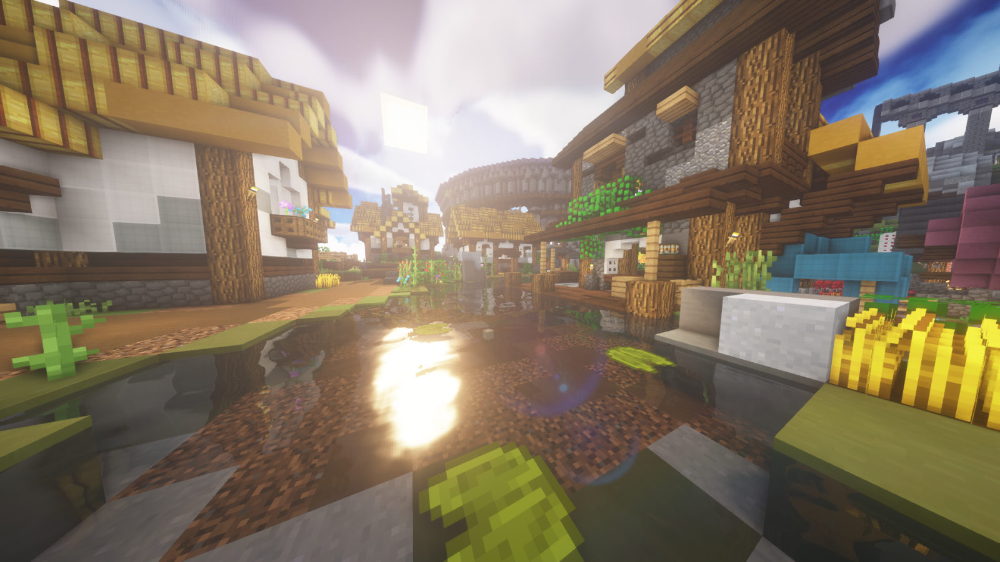

Progression Guidebook
SkyBlock progression from level 0 to endgame. Skills, gear, weapons, and ways to make coins at each stage.
1. Pick One Skill Path
Don't spread yourself thin — commit to a single main skill early and push it hard. The three strongest starting paths are Foraging, Combat and Mining. Foraging on Galatea is the fastest way to early coins and progression: rush Heart of the Forest to at least Tier III. Combat players should aim for Combat level 12+ and pick up Glacite armor to start farming Slayers. Mining players should reach the Dwarven Mines and unlock the Heart of the Mountain. Whichever you choose, the goal of early game is to reach roughly 300 Magical Power, an Aspect of the End, and your first Slayer weapon.
2. Mobility & Damage
Your first mobility tool is the Grappling Hook (a few thousand coins on the Auction House). Your real target, though, is the Aspect of the End — its teleport stays useful for the entire game and trivialises movement. For damage, you don't need expensive gear yet: reforge your weapon and armor first. Aim for 100% crit chance using Sharp on weapons and Fierce on armor, then add cheap enchants (Sharpness, Critical, Growth, Protection). Clean stats beat an expensive weapon you can't support.
3. Magical Power & Accessories
Magical Power (MP) is the single biggest early stat multiplier, so build your Accessory Bag aggressively. Grind some Redstone collection (Redstone minions + Super Compactors make this passive) to unlock more slots. Buy accessories by best coins-per-MP value — the SkyHelper Discord bot or website ranks these for you instantly. Enrich your highest accessories once you can afford Enrichments, and tune your Power Stone (Itchy is the standard early pick) in the Thaumaturgy menu.
4. Your First Slayers
Slayers are the gateway to real gear. Start with Revenant Horror (Zombie) or Tarantula (Spider) — both are cheap to start and drop strong early items. Push Revenant to Tier 3 for the Reaper gear and Beheaded Horror, and Tarantula for the Tarantula Talisman line. Don't rush Tier 5 while undergeared; consistent Tier 3 spawns earn more XP per hour than dying repeatedly to a boss you can't kill.
5. Making Your First Coins
The most reliable permanent income is Bazaar flipping — buy-order an item, sell-order it higher, pocket the spread (see the Videos tab for a full walkthrough). Limited-time events like the Spooky Festival, Jerry's Workshop and seasonal events are huge bursts of easy coins, so always participate. Beyond that, sell the surplus your minions already generate, and use a couple of Enchanted-item minions (Redstone, Cactus, or your skill's resource) to print passive income while you play.
6. Next Steps
Once you've got an Aspect of the End, ~300 MP, a Slayer weapon and a full reforged armor set, you're ready to leave early game. From here, continue with your chosen skill to unlock more collections and recipes, and start preparing for the Catacombs (Dungeons) — that's where Midgame really begins.
1. Enter the Catacombs
Midgame is built around Dungeons. Don't rush in the moment you hit Combat 15 — go in with ~300 MP, an Aspect of the End and a Slayer item (a Wand of Mending or Radiant Power Orb help a lot). Run Floors 1–3 to learn mechanics and farm early drops, then climb to Floor 5 (Livid) for Shadow Assassin armor and Floor 6 (Sadan) for Necron's Handle and Giant's Sword. Pick a class — Berserk or Mage are the easiest to carry yourself with.
2. Push Slayers to Tier 4–5
Now you can afford to grind higher Slayer tiers. Take Revenant and Tarantula to Tier 4–5, and start Sven Packmaster (Wolf) for the Hunter armor and Spirit pet line. These bosses fund your accessory and gear upgrades and unlock essential drops like the Scatha pet rocks and Tarantula talismans. Keep your accessory bag growing — MP is still scaling your damage hard at this stage.
3. Gear Goals
Target Shadow Assassin armor (cheap, great EHP + crit damage) and a dungeon weapon like the Spirit Sceptre (Mage) or a clean Livid Dagger. Build toward the Storm / Goldor / Maxor / Necron's (GDRAG-tier) setup as a long-term target. Upgrade your pet to a leveled Ender Dragon or class-appropriate pet, and start collecting reforge stones to push stats further.
4. Midgame Coins
Income scales fast now. Dungeon carries and selling drops, high-tier Slayer loot, and Croesus chest profits all add up. If you went Mining, the Dwarven Mines and Crystal Hollows (Gemstone mining, powder grinding) are excellent. Reinvest profits straight into MP and gear — don't hoard coins doing nothing.
1. Master Mode & Higher Floors
Late game opens up Master Mode Catacombs (M1–M7). These hit far harder but drop the best dungeon items and huge XP. Work up to Floor 7 / Master Mode 7 (Necron) for the Necron / Storm / Goldor / Maxor armor pieces and Necron's Blade upgrades. Bring a real EHP setup and learn the boss mechanics — Master Mode punishes mistakes.
2. Crimson Isle & Kuudra
Unlock the Crimson Isle and start Kuudra runs. Crimson armor + attribute shards are some of the strongest gear in the game and the main reason to be here. Climb Kuudra tiers as your gear allows (Basic → Hot → Burning → Fiery → Infernal) and complete the faction questlines for reputation and rewards.
3. Tier 5 Slayers
Grind Tier 5 on every Slayer, and unlock the advanced bosses: Voidgloom Seraph (Enderman) for the Judgement Core and Summoning Eye, and Inferno Demonlord (Blaze) for Crimson progression. These drops are core to a top-tier build and a steady source of high-value loot.
4. Weapons & Coins
Save toward a Hyperion (or another Necron's Blade reforge: Scylla, Valkyrie, Astraea) — the standard endgame-bridge weapon. Fund it with Kuudra runs, Master Mode loot, high-tier Slayers and Gemstone mining. By the end of this stage you should have a near-complete dragon/dungeon set, a leveled pet, and the foundation for endgame min-maxing.
1. Min-Max Your Gear
Endgame is about squeezing out every last stat. Finish your Crimson armor with maxed attribute shards, apply top reforges, and complete enchants to their highest tiers with Master Stars on your weapon. Add dyes and cosmetics if you want the look, but the real gains are in attributes, enchants and pet stats.
2. Best Pets & Enchants
Level a Golden Dragon (the premier damage pet) or a maxed Bal / Ender Dragon depending on your setup. Max every relevant enchant, fully tune your Power Stone, and push your Accessory Bag to maximum Magical Power with full Enrichments. Small percentages compound into massive damage at this level.
3. Hardest Content
Tackle the toughest fights for the best rewards: Kuudra Tier 5 (Infernal), Master Mode Floor 7, and high-tier Slayer RNG grinds for the rarest drops. These are also where the game's best loot and biggest single payouts live.
4. Endgame Coins & Goals
At this point your income comes from whatever you enjoy most — mega-scale farming, Gemstone/powder mining, Kuudra and Master Mode loot, or flipping rare items. Set personal goals: maxing Catacombs level, completing collections, chasing a specific rare drop, or pushing Skill/Slayer caps. Endgame is open-ended — pick what's fun and optimise it.
Guide Videos
Useful YouTube videos for SkyBlock progression.
Bazaar Flipping
A full walkthrough of making coins by flipping items on the Bazaar — the most reliable permanent early-game income.

Early Game Money Making
The ultimate early-game money-making progression — the methods and order to follow when coins are tight.

Best Money Methods (Early / Mid / Late)
Updated 2026 breakdown of the best money-making methods for every stage of progression.

Ultimate Dungeons Guide
Everything you need to know about the Catacombs — classes, floors, gear and strategy. Your bridge into midgame.

FAQ & Tips
Common beginner questions, mistakes to avoid, and tools that make progression a lot smoother.
Should I rush Combat 15 and jump into Dungeons?
No. Going into the Catacombs undergeared just gets you killed and wastes time. Build to roughly 300 Magical Power, an Aspect of the End, a Slayer weapon and a reforged armor set first. Then F1–F3 will feel easy and you'll actually progress.
What's the single best stat to invest in early?
Magical Power. It scales almost everything through your Accessory Bag. Always buy accessories by best coins-per-MP value, unlock more bag slots via Redstone collection, and tune your Power Stone. MP is the highest-leverage early investment there is.
How do I hit 100% crit chance?
Reforge before you buy expensive gear. Use Sharp on your weapon and Fierce on your armor, add Critical/Itchy where possible, and tune crit chance on your Power Stone. 100% crit chance plus crit damage is a bigger upgrade than most early weapons.
What are the most common beginner mistakes?
Hoarding coins instead of reinvesting; spreading XP across every skill at once; buying a flashy weapon you can't support with stats; skipping events; and ignoring Slayers. Pick one skill path, keep MP climbing, run events, and reinvest profits into gear.
Which tools should I be using?
SkyHelper (Discord bot / website) for best coins-per-MP accessory rankings and profit calculators, and a community mod pack (such as SkyBlock-focused Forge/Fabric mods) for dungeon maps, price overlays and quality-of-life. These save you enormous amounts of time.
How do I make coins reliably?
Bazaar flipping is the most consistent permanent income (see the Videos tab). Layer on limited-time events for big bursts, passive minions for income while you play, and Slayer / Dungeon drops as your gear improves. Never let coins sit idle — reinvest into MP and gear.
Links & Contact
Useful external resources and where to get more help.
Useful Resources
Trusted community sites and tools for prices, stats and planning.
Get in Touch
Found a mistake or have a suggestion for the guide? Reach out and I'll keep it up to date.